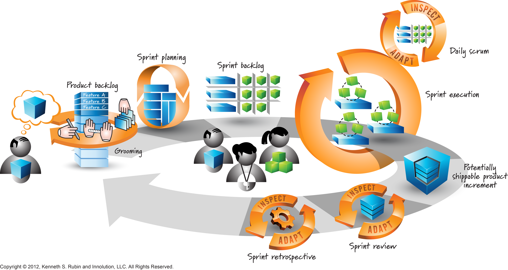

Kenneth S. Rubin is an experienced Agile and Scrum expert who has helped organizations understand and use Scrum to manage projects. He is known for his work as a Scrum trainer, coach, and consultant.
Rubin wrote Essential Scrum: A Practical Guide to the Most Popular Agile Process. The book explains Scrum concepts, including roles, events, artifacts, and how teams work together to deliver products in small increments. His work helps teams understand how to organize their work, communicate, and improve their development process.
Rubin also helped create the Visual AGILExicon, a collection of visual images that explain Agile and Scrum ideas. These visuals help people understand Scrum concepts more easily. For example, the Scrum framework diagram shows how Scrum elements fit together to help teams plan, work, review progress, and improve.
